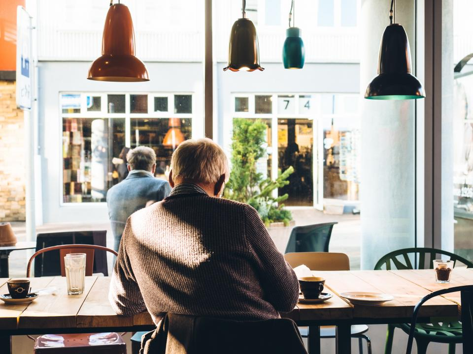

Тестовая кофейня aisa — уютный уголок в Алматы
Начните день с ароматного кофе, свежих завтраков и домашней выпечки в приятной атмосфере.
Начните день с ароматного кофе, свежих завтраков и домашней выпечки в приятной атмосфере.

Свежеобжаренный кофе и разнообразные напитки помогут вам начать день с приятного вкуса.

Нежные завтраки и ароматная выпечка из наших рецептов создадут уютное утро.

Оформляйте заказы на вынос, чтобы наслаждаться нашими блюдами, когда вам удобно.

Тестовая кофейня aisa предлагает широкий выбор кофе, завтраков и выпечки, приготовленных с вниманием к деталям. Мы ценим уютную обстановку, где каждый гость может расслабиться или поработать. В меню представлены как классические, так и авторские напитки, а также свежие выпечки, которые приятно удивят вкусовые предпочтения. Приходите, чтобы почувствовать домашний комфорт.
Загляните к нам в Тестовую кофейню aisa и выберите свой любимый вкус. Как насчёт чашечки уже сейчас?